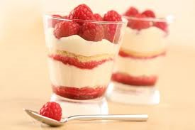

Tiramisu
Ingrédients
4×
- 3 oeufs
- 100 g de sucre
- 1 sachet de sucre vanillé
- 250 g de mascarpone
- 1 paquet de Roudor ou boudoirs
- 1 double café
- 30 g de cacao amer

Préparation
Étape 1
Séparer les blancs des jaunes de 3 oeufs. Fouetter les jaunes avec 2 cas de 100 g de sucre et 1 sachet de sucre vanillé jusqu’à blanchiment. Monter les blancs en neige.
Étape 2
Ajouter 250 g de mascarpone aux jaunes jusqu’à obtenir une crème lisse, puis incorporer délicatement les blancs.
Étape 3
Alterner les couches : 1 paquet de Roudor ou boudoirs trempés dans 1 double café, puis crème au mascarpone. Laisser reposer 3h au frais.
Étape 4
Saupoudrer de 30 g de cacao amer avant de servir.
Conseils
Version framboises : remplacer le café par 200g de framboises sucrées avec 35g de sucre ; ne pas tremper les biscuits et ajouter une cuillère de framboises sur chaque couche.
Résumé
3 oeufs
100 g de sucre
1 sachet de sucre vanillé
Séparer les blancs des jaunes Fouetter Monter les blancs en neige
250 g de mascarpone
incorporer
1 paquet de Roudor ou boudoirs
1 double café
Alterner Laisser reposer 3h
30 g de cacao amer
Saupoudrer